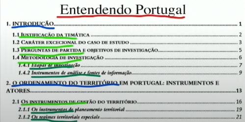

Entendendo Portugal
1. Introducao
1.1 Justificacao da Tematica
1.2 Carater Excecional do caso de estudo
1.3 Perguntas de partida e pbjetivos de investigacao
1.4 Metodologia de investigacao
1.4.1 Etapas de investigacao
1.4.2 Instrumentos de analise e fontes de informacao
O ordenamento do territorio em Protugal.: Instrumentos e Atores
2.1 Os instrumentos de gestao do territorio
2.1.1 Os instrumentos de planeamento territorial
2.1.2 Os regimes territoriais especiais